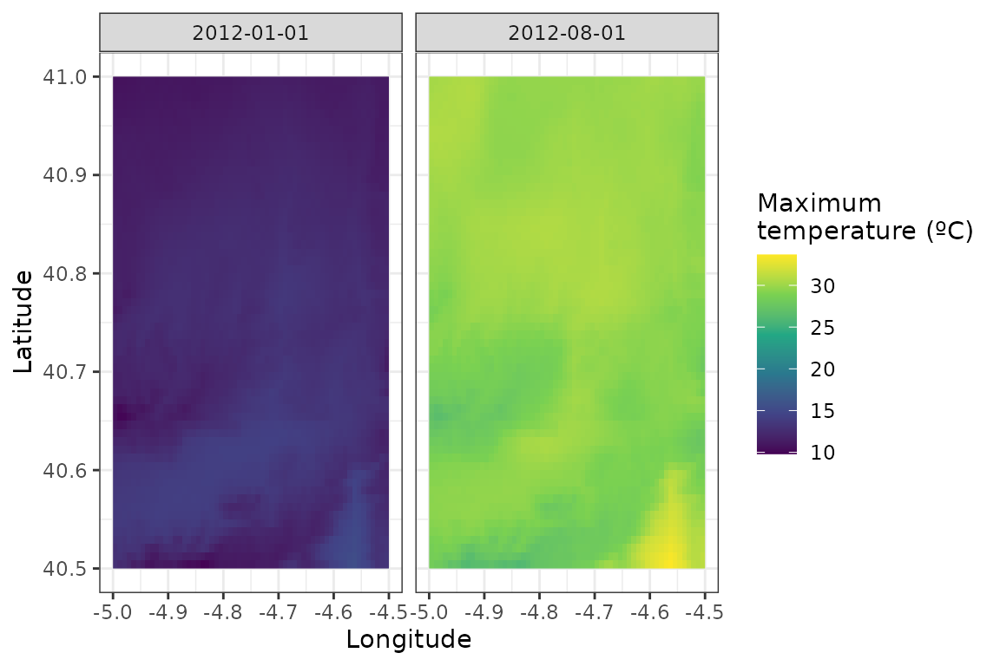
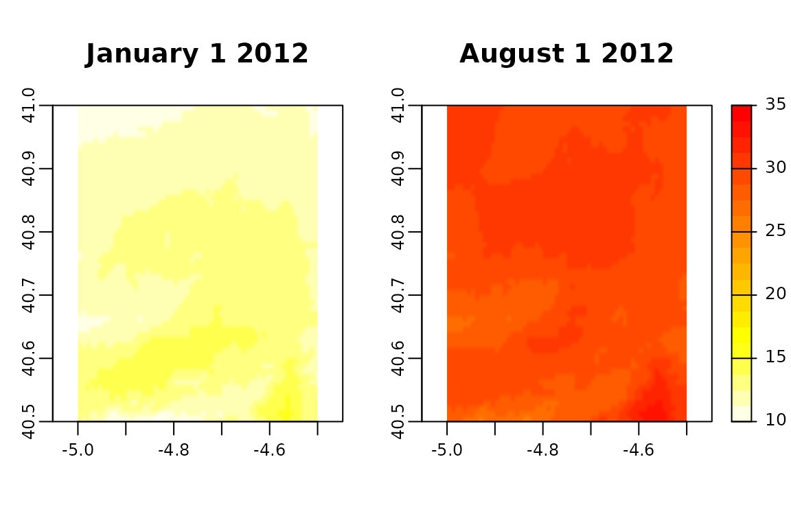

vignettes/polygons-raster.Rmd
polygons-raster.RmdWith easyclimate you can easily download daily climate data for a given set of points or polygons within Europe. To download and install the latest version of easyclimate from github follow the instructions in https://github.com/VeruGHub/easyclimate
In this tutorial we will work through the basics of using easyclimate with a spatial polygon.
If you wish to download the climatic data of a specific region, you need to specify at least four corners of the polygon including the area and specify the type of output you want to obtain (i.e. a data frame - df or a raster - raster). You can also provide the polygons of interest in a sf object.
library(easyclimate)
library(terra)
coords_t <- vect("POLYGON ((-4.5 41, -4.5 40.5, -5 40.5, -5 41))")
Sys.time() # to know how much it takes to download
## [1] "2021-07-12 15:48:33 EDT"
df_tmax <- get_daily_climate(
coords_t,
period = c("2012-01-01", "2012-08-01"),
climatic_var = "Tmax",
output = "df" # return dataframe
)
Sys.time()
## [1] "2021-07-12 15:48:57 EDT"
head(df_tmax)
## ID_coords x y date Tmax
## 1 1 -4.995833 40.99583 2012-01-01 1065
## 2 1 -4.987500 40.99583 2012-01-01 1068
## 3 1 -4.979167 40.99583 2012-01-01 1071
## 4 1 -4.970833 40.99583 2012-01-01 1074
## 5 1 -4.962500 40.99583 2012-01-01 1076
## 6 1 -4.954167 40.99583 2012-01-01 1089Note that temperature is given as ºC*100 to avoid floating values. You can change the unit of this variable as follows:
Then, you can visualize the results and compare both dates
library(ggplot2)
tapply(clim_df$tmax, clim_df$date, summary)
## $`2012-01-01`
## Min. 1st Qu. Median Mean 3rd Qu. Max.
## 9.81 11.83 12.49 12.50 13.10 15.44
##
## $`2012-08-01`
## Min. 1st Qu. Median Mean 3rd Qu. Max.
## 26.05 29.10 29.68 29.57 30.10 33.66
ggplot() +
geom_raster(data = clim_df,
aes(x = x, y = y, fill = tmax)) +
scale_fill_continuous(type = "viridis", name = "Maximum\ntemperature (ºC)") +
facet_wrap(~date) +
ylab("Latitude") + xlab("Longitude") +
theme_bw()
You can get a (multi-layer) raster directly as output, if you specify output = raster:
Sys.time()
## [1] "2021-07-12 15:49:18 EDT"
ras_tmax <- get_daily_climate(
coords_t,
period = c("2012-01-01", "2012-08-01"),
climatic_var = "Tmax",
output = "raster" # return raster
)
Sys.time()
## [1] "2021-07-12 15:49:42 EDT"
ras_tmax
## class : SpatRaster
## dimensions : 60, 60, 2 (nrow, ncol, nlyr)
## resolution : 0.008333333, 0.008333333 (x, y)
## extent : -5, -4.5, 40.5, 41 (xmin, xmax, ymin, ymax)
## coord. ref. : +proj=longlat +datum=WGS84 +no_defs
## source : memory
## names : 2012-01-01, 2012-08-01
## min values : 981, 2605
## max values : 1544, 3366
ras_tmax <- ras_tmax/100
par(mfrow = c(1, 2))
terra::plot(ras_tmax, 1, col = rev(heat.colors(20)), type = "continuous", smooth = TRUE, range = c(10, 35), legend = FALSE, mar=c(4, 2, 4, 2), main = "January 1 2012")
terra::plot(ras_tmax, 2, col = rev(heat.colors(20)), type = "continuous", smooth = TRUE, range = c(10, 35), mar = c(4, 1, 4, 3), main = "August 1 2012") 
Now you know how to extract climatic variables with easyclimate, for a specific area. Check out this other vignette if you need to extract the data for specific points.